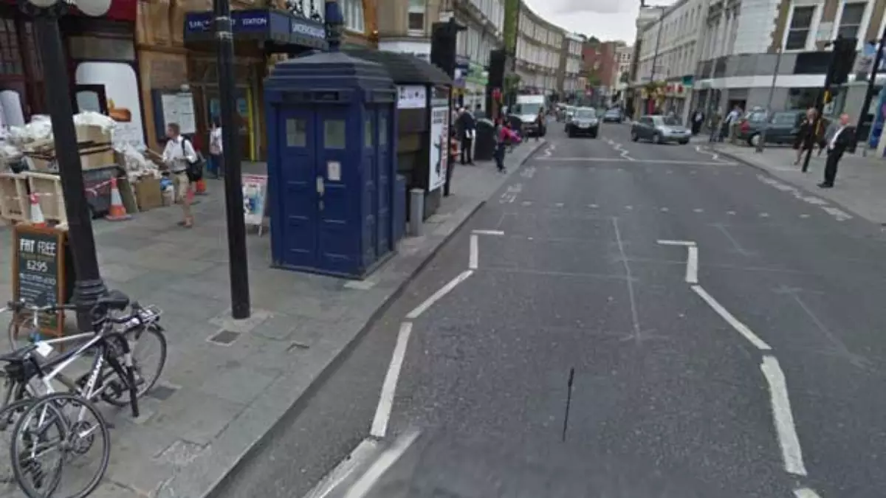
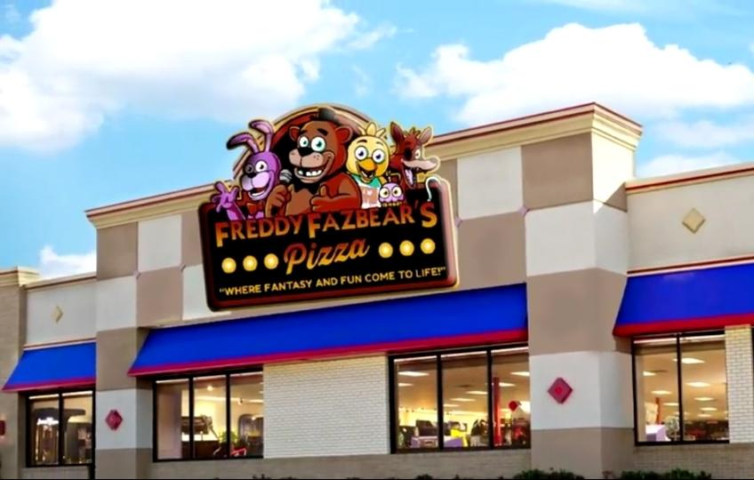

Notícias

Caixa azul aparece e depois some sem explicação

O carro que foi visto antes de ter sido inventado

Esqueleto é avistado andando normalmente
Abre novo restaurante da Fazbear
Mais detalhes
A caixa de policia
Nas ruas de uma cidade tranquila, uma caixa de polícia britânica dos anos 60 apareceu de forma enigmática em uma esquina deserta. Sua estrutura azul distintiva e luzes intermitentes intrigaram os moradores, evocando nostalgia e mistério. A cabine rapidamente se tornou assunto de discussão. Alguns a viam como um elo com o passado, enquanto outros sentiam um ar de sobrenatural ao seu redor. Relatos surgiram: figuras sombrias entrando à noite, murmúrios misteriosos ecoando dela. Investigações e teorias não levaram a respostas claras. A cabine se tornou atração turística e ponto de encontro. Ela uniu a comunidade, gerando histórias e debates apaixonados. Então, tão misteriosamente quanto apareceu, a cabine azul desapareceu. Deixou a esquina vazia, mas com memórias duradouras. A cidade percebeu que, mesmo na era moderna, mistérios desafiam explicações, deixando a lenda da cabine dos anos 60 ecoar nas mentes curiosas.
Fazbear Entertainment
A empresa é conhecida por suas franquias de restaurantes temáticos, mais notavelmente a "Freddy Fazbear's Pizza", onde a magia ganha vida por meio de animatrônicos avançados e interativos. As atrações oferecem uma experiência imersiva, onde os visitantes podem desfrutar de comida deliciosa enquanto interagem com os personagens animados que percorrem os restaurantes. Ao longo dos anos, a Fazbear Entertainment inovou na integração de tecnologias de ponta, garantindo que suas atrações continuem a surpreender e encantar os clientes. Desde shows ao vivo até jogos interativos, a empresa oferece uma variedade de experiências que cativam públicos de todas as idades.
Esqueleto
Um acontecimento extraordinário varreu a cidade, deixando os moradores atônitos e perplexos. De repente, um esqueleto vivo apareceu no centro da praça principal, desafiando as leis da natureza e desafiando todas as concepções convencionais da realidade. O esqueleto, anteriormente um símbolo de morte e mistério, agora estava vivo e em movimento. Seus ossos brilhavam com uma estranha luminosidade, enquanto a figura esquelética parecia se movimentar com uma agilidade surpreendente. As pessoas se aglomeravam ao redor, um misto de fascinação e temor pintado em seus rostos. As teorias se espalhavam como fogo selvagem. Alguns acreditavam que era um truque elaborado, uma ilusão habilmente executada. Outros sussurravam sobre forças sobrenaturais e magia ancestral que haviam ressuscitado os ossos antigos. Independentemente da explicação, o esqueleto vivo desafiava qualquer lógica convencional.
O DeLorean

Um fenômeno inacreditável sacudiu a tranquilidade de uma pequena cidade, Hill Valley. Um carro estranhamente elegante e futurista, um DeLorean, surgiu em pleno século passado, um momento muito antes de seu tempo. Sua presença destoava fortemente das ruas repletas de carros clássicos e modismos da época O DeLorean, um veículo que ainda não havia sido inventado, capturou a atenção e o espanto de todos os que o viram. Com suas linhas aerodinâmicas e porta-asas distintivas, o carro parecia ter desafiado as barreiras do tempo. Os moradores da cidade se reuniam ao redor, perplexos com essa visão do futuro em pleno passado, alguns até pensaram que se tratava de uma nave espacial. Teorias e especulações se propagaram. Alguns acreditavam que isso era resultado de um experimento secreto, um truque elaborado ou talvez uma viagem no tempo. Outros consideravam a possibilidade de que alguma força misteriosa estivesse em jogo, embaralhando as linhas do tempo de maneira inexplicável.
O dia em que o carro foi visto, é bem proximo do dia em que um raio atingiu o relógio da torre(imagem ao lado). Essa noite também marca a ultima vez que o misterioso carro foi visto. Há quem diga que o inventor do carro fez o carro da forma que fez por causa dessa aparição, mas John DeLorean negou
Número de telefone: (12) 9 8765-4321
Por: Vinicius Marian e Lucas Alonso